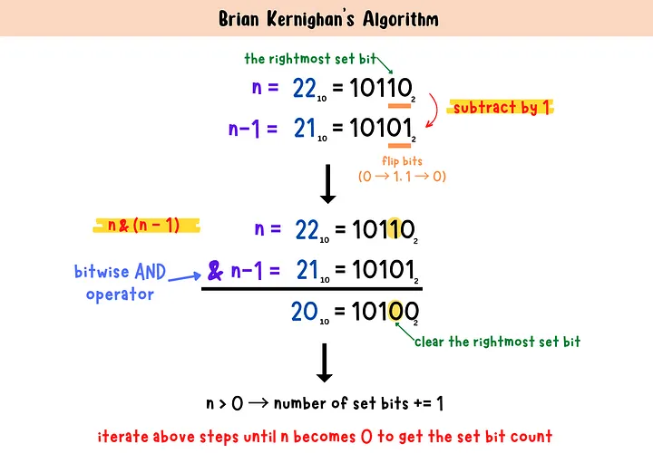
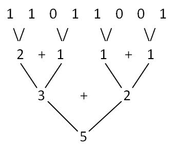
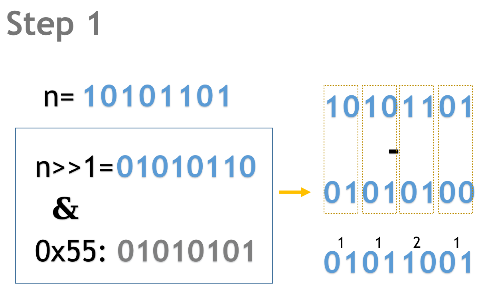
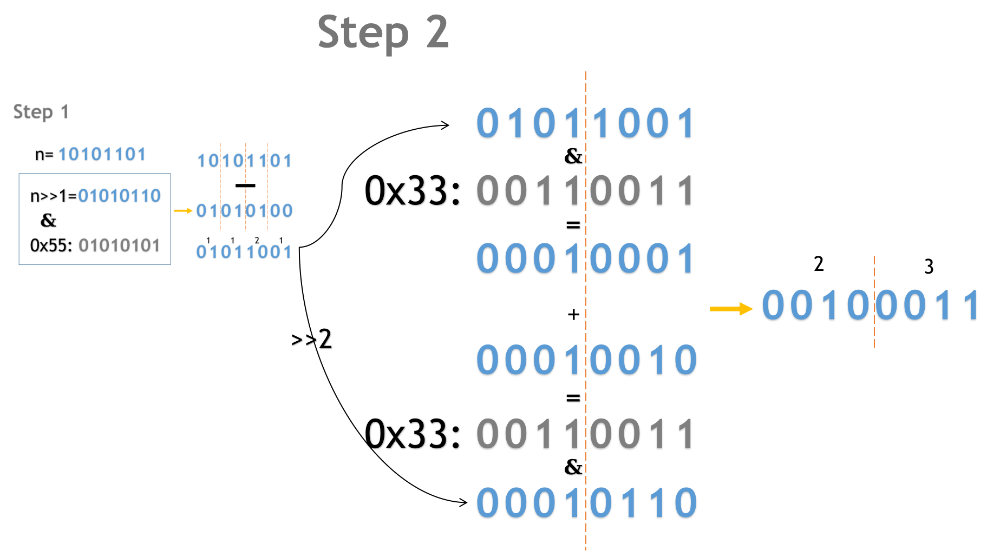

算法系列——统计二进制数中1的个数
前言
最近在学习DBoW2的论文和代码。
在DBoW2中使用的是二值特征，二值特征在计算距离的时候直接使用Hamming Distance，这样的话，计算距离的时候简单的异或操作，然后统计1的个数就可以了。
但是在计算Hamming Distance的时候，有这样一段代码：
1 | const uint64_t *pa, *pb; |
上面这段代码大概的意思是这样：
- 将特征向量（如果使用
ORB特征并且采用默认参数的话，长度是256bit）按照64bit进行分组，然后进行异或操作 - 统计异或操作后每个64bit中
1的个数，然后将每个64bit中1的个数相加，得到最终的Hamming Distance
代码中的注释虽然说明这段代码的来源：
1 | // Bit count function got from: |
但是注释中所提到的Brian Kernighan算法似乎是另外一种算法（后文会单独作为一个算法解释），与代码中的算法不一样。
上面的这段代码到底是怎么统计1的个数的呢？这就是本文要讨论的问题。
PS:说实话，这几行代码如果没有类似算法经验的话，会让人一头雾水。查询之后才发现，即使是简单的统计二进制数中1的个数，也有很多种方法，其中有些方法会让人惊呼巧妙！
统计二进制数中1的个数
最简单且最直接的方法 —— 循环移位
最简单的方法就是循环移位，然后统计1的个数。这种方法的思路很简单，就是将二进制数中的每一位都移动到最低位，然后判断最低位是否为1，如果是的话，计数器加一，然后再将二进制数右移一位，直到二进制数为0。
1 | int countBits(unsigned int n) |
时间复杂度：\(O(N)\)，\(N\)是二进制数的位数
Brian Kernighan算法
这个算法就有点巧妙了，它的思路是这样的：
一个数
n减去1，得到的结果是n的二进制数中最右边的1变成0，而在这个1右边的所有0都变成1。
举个例子： \(n=22_{10}=10110_{2}\)，最右边的1是第二位的1，其右边有一个0。那么这个数减去1之后，第二位的1就会变成0，而第一位的0会变成1，其余位不变，得到的结果是\(n-1=21_{10}=10101_{2}\)上面这样做的原因是，将
n和n-1进行与操作，会将n的二进制数中最右边的1即其右边的所有为都变成0。重复上面的操作，直到
n变成0，那么就可以统计出n的二进制数中1的个数了。
上面的操作可以用一张图描述：

上图引用自：Brian Kernighan's Algorithm1 | int countBits(unsigned int n) |
时间复杂度：\(O(M)\)，\(M\)是二进制数中1的个数
平行法
这是一个更加巧妙的方法，总体的思路可以用下面这张图片：

上图引用自：算法-求二进制数中1的个数主要的思路可以拆解成如下几个步骤：
- 将二进制数中的每两位当作一组相加，得到的结果是每两位中
1的个数。 - 将上面得到的结果中的每两组当作一组相加，得到的结果是每四位中
1的个数。 - 将上面得到的结果中的每两组当作一组相加，得到的结果是每八位中
1的个数。
虽然用图描述起来很容易，但是在代码中的实验就显得很巧妙了。这里以一个8位的二进制数为例，来说明这个算法的实现过程。
1 | unsigned int countBits(uint8_t n) |
步骤1
我们假设\(n=10101101_{2}\)，那么步骤1是先将每两位分为一组，每一组中高位往后移动一位，并用一个掩码（\(0\text{x}55\)）将移位后的数每两位的高位置位0。这样实际上对于一个2位的二进制数来说，只有4种情况。
00，那么明显，移位+掩码之后也是00，两者相减也是001，那么移位+掩码之后是00，两者相减是01。算出了这两位中有1个110，那么移位+掩码之后是01，两者相减是01。算出了这两位中有1个111，那么移位+掩码之后是01，两者相减是10。算出了这两位中有2个1
步骤1可以用下图表示：

步骤2
有了第一步，第二步的做法就显得比较直接了。第一步我们将每两位的1的个数都存储在了最后得到数的每两位中，那么第二步就是将两位当作一组，把相邻的组相加起来：
这里面主要就是将第一步的结果右移两位，然后每四位中的高两位清灵，这样两个数相加的结果就是每四位中的1的个数，且这数分别存储在每四位中。

步骤3
步骤3的做法和步骤2的做法类似，只不过这里是将每四位当作一组，然后将相邻的组相加起来。
处理8位及以上的二进制数
上面的步骤只能处理8位以内的二进制数，如果要处理8位以上的二进制数，那么就需要将上面的步骤进行扩展。假设\(n\)为32bit的二进制数。那么前几个步骤处理完之后，每8位为一组的结果就存储在了每8位中。那么接下来的步骤就是怎么将每8位中的结果相加起来。也就是下面这段代码的最后一行。注意，下面这段代码在的输入是一个32bit二进制数，在return之前的代码除了掩码的位数不同之外，与上面的处理8位二进制数的代码是完全样的。
1 | unsigned int countBits(uint32_t n) |
下面这句代码相当于将每8位中的结果相加起来。是不是感觉特别神奇。具体的过程我们其实可以把第二个因数\(0\text{x}01010101\)拆开，变成\(0\text{x}01000000+0\text{x}00010000+0\text{x}00000100+0\text{x}00000001\)，然后最大的数与\(x\)的最后8位相乘，以此类推，知道最小的数与\(x\)的前8位相乘，经过相乘之后，\(x\)中每8位为一组都移动到了最高8位的位置。然后再将\(x\)右移24位，就得到了最终的结果。
1 | (x * 0x01010101) >> 24; |
用一个动画可以很清晰地演示这个过程
回到最初的例子
有了上面的一系列说明之后，特别是平行法这个方法的详细说明之后，本文开头提到的代码就比较容易懂了。除去算法之外，代码中的一些操作符优先级也很容易让人头晕。现在让我们重新来看开头提到的代码
1 | const uint64_t *pa, *pb; |
我们只抽取其中计算二进制数中1的个数部分，也就是for循环内部的代码，然后重新整理成与平行法中4个步骤互相对应的形式：
1 | // step1: count bits of each 2-bit chunk |
首先看步骤1
步骤1中的展开应该如下：
&号右边先计算~(uint64_t)0，表示对0的每一位取反，这样就得到了一个全为1的数:0xFFFFFFFFFFFFFFFF,F代表15- 然后将这个数除以3，得到的结果是
0x5555555555555555，这个数的二进制表示为0101010101010101010101010101010101010101010101010101010101010101也就是平行法中第一步的掩码
步骤2
步骤2中，~(uint64_t)0/15表示0x1111...1111,于是(uint64_t)~(uint64_t)0/15*3就表示平行法第二步的掩码0x3333....3333
步骤3
步骤3与平行法中的完全一致，也就是将每8位中的结果相加起来
步骤4
(uint64_t)~(uint64_t)0/255表示0x0101....0101，写成二进制的话就是，从左到由，每7个0跟1个1。这一步也就是平行法最后一步，将最终结果的二进制数每8位移动到最高的8位相加起来，然后总体往右移（去掉第八位之后的所有0），这样就得到最终结果。唯一不同的是，这里计算的是64bit的二进制数，因此需要移动的位数是(sizeof(uint64_t) - 1) * CHAR_BIT = 56
平行法的时间复杂度
由于无论什么二进制序列，都需要固定次数的操作就可以计算出结果，因此时间复杂度是\(O(1)\)
参考资料
- 算法-求二进制数中1的个数 —— 图示说明几种经典算法
- bit count algorithm —— 列举更多的CountBits算法，并且都有代码和解释
- Bit Twiddling Hacks —— 代码中提到的Brian Kernighan算法，包含更多的位操作算法。来自斯坦福大学的Graphics Group
- Brian Kernighan's Algorithm —— 详细的图例说明Brian Kernighan算法，非常易懂